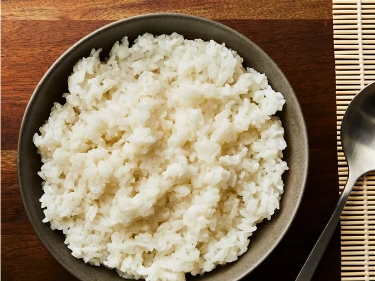

Perfect Sushi Rice

Description
Sushi rice is a type of short-grain rice that is seasoned with a mixture of rice vinegar,
sugar, and salt. It is sticky and slightly sweet, making it perfect for sushi rolls and nigiri.
The key to perfect sushi rice is to rinse the rice thoroughly before cooking to remove excess starch,
and to let it cool to room temperature before using it in sushi.
Ingrédients
- 2 cups uncooked sushi rice
- 2 cups water
- ¼ cup rice wine vinegar or to taste
- ¼ cup white sugar or to taste
- 1 tablespoon vegetable oil
- 1 teaspoon salt or to taste
Étapes
- Rinse the sushi rice in a fine-mesh strainer under cold running water until the water runs clear. This removes excess starch and prevents the rice from becoming too sticky.
- In a medium saucepan, combine the rinsed rice and water. Bring to a boil over high heat, then reduce the heat to low, cover, and simmer for 18-20 minutes, or until the water is absorbed and the rice is tender.
- While the rice is cooking, in a small saucepan, combine the rice wine vinegar, sugar, vegetable oil, and salt. Heat over low heat until the sugar dissolves, stirring occasionally. Remove from heat and let it cool slightly.
- Once the rice is cooked, transfer it to a large bowl and gently fold in the vinegar mixture using a wooden spoon or spatula. Be careful not to mash the rice.
- Allow the rice to cool to room temperature before using it for sushi rolls or nigiri.
Accueil